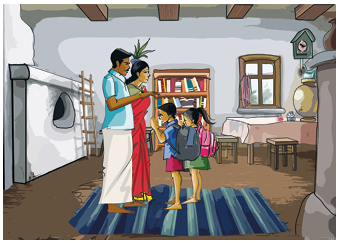

கவிதைப்பேழை
நுழையும் முன்
கல்வி அழகே அழகு என்பர் பெரியோர். கற்றபடி நிற்பதே அந்த அழகைப் பெறுவதற்கான வழி. கல்வி, அறிவை வளர்ப்பதோடு பண்படுத்தவும் செய்யும். எவ்வளவுதான் கற்றிருந்தாலும் பண்பாடு இல்லாவிட்டால் அந்தக் கல்வி பயனற்றுப் போகும். பண்பட்ட மனிதரின் புகழே பல்லாண்டு நிலைத்திருக்கும். எனவே, படிப்போம் பண்பாட்டோடு நிற்போம், பார் போற்ற வாழ்வோம்
ஏட்டில் படித்ததோடு இருந்துவிடாதே நீ
ஏன் படித்தோம் என்பதையும் மறந்துவிடாதே
நாட்டின் நெறிதவறி நடந்துவிடாதே நம்
நல்லவர்கள் தூற்றும்படி வளர்ந்துவிடாதே
மூத்தோர் சொல் வார்த்தைகளை மீறக்கூடாது பண்பு
முறைகளிலும் மொழிதனிலும் மாறக்கூடாது
மாற்றார் கைப்பொருளை நம்பி வாழக்கூடாது தன்
மானமில்லாக் கோழையுடன் சேரக்கூடாது
துன்பத்தை வெல்லும் கல்வி கற்றிடவேணும் நீ
சோம்பலைக் கொல்லும் திறன் பெற்றிடவேணும்
வம்பு செய்யும் குணமிருந்தால் விட்டிடவேணும் அறிவு
வளர்ச்சியிலே வான்முகட்டைத் தொட்டிடவேணும்
வெற்றிமேல் வெற்றிவர விருதுவர பெருமைவர
மேதைகள் சொன்னதுபோல் விளங்கிடவேண்டும்
பெற்ற தாயின் புகழும் நீ பிறந்த மண்ணின் புகழும்
வற்றாமல் உன்னோடு வாழ்ந்திடவேண்டும்
பட்டுக்கோட்டை கல்யாணசுந்தரம்
தூற்றும்படி, இகழும்படி
மாற்றார், மற்றவர்
மூத்தோர், பெரியோர்
நெறி, வழி
மேதைகள், அறிஞர்கள்
வற்றாமல், குறையாமல்

நாம் நூல்களைக் கற்றதோடு இருந்துவிடக்கூடாது. கற்றதன் பயனை மறக்கக் கூடாது. நம் நாட்டின் நெறி தவறி நடக்கக் கூடாது. நல்லவர்கள் குறை சொல்லும்படி வளரக் கூடாது.
பெரியோர் கூறும் அறிவுரைகளை மீறக் கூடாது, பிறரிடம் பழகும் முறையிலும் பேசும் முறையிலும் பண்புநெறி மாறக் கூடாது. பிறர் உழைப்பை நம்பி வாழக் கூடாது.
தன்மானம் இல்லாத கோழைகளுடன் சேரக் கூடாது. துன்பத்தை நீக்கும்
கல்வியினைக் கற்க வேண்டும். சோம்பலைப் போக்கிட வேண்டும். பிறருடன் வம்பு செய்யும் வழக்கம் இருந்தால் அதை விட்டுவிட வேண்டும். வானைத் தொடும் அளவுக்கு அறிவை வளர்த்துக் கொள்ள வேண்டும். மேலான அறிஞர்கள் கூறிய அறிவுரைகளின்படி வாழவேண்டும். அதன்மூலம் வெற்றிகளையும் விருதுகளையும் பெருமையையும் பெறவேண்டும். பெற்ற தாயின் புகழும் நம் தாய்நாட்டின் புகழும் அழியாத வகையில் வாழவேண்டும்.
ஏட்டில், ஏன் படித்தோம்
நாட்டின், நல்லவர்
ஆகிய சொற்களில் முதல் எழுத்து ஒன்றி வந்துள்ளது. இவ்வாறு முதல் எழுத்து ஒன்றி வருவதை மோனைத்தொடை என்பர். மோனைத்தொடையில் குறில் நெடில் மாறியும் வரலாம்.
இயைபு,
இருந்துவிடாதே, மறந்துவிடாதே
வாழக்கூடாது, சேரக்கூடாது
எளிய தமிழில் சமூகச் சீர்திருத்தக் கருத்துகளை வலியுறுத்திப் பாடியவர் பட்டுக்கோட்டை கல்யாணசுந்தரம். திரையிசைப் பாடல்களில் உழைப்பாளிகளின் உயர்வைப் போற்றியவர். மக்கள் கவிஞர் என்னும் சிறப்புப் பெயரால் அழைக்கப்படுபவர்.
1, பாடப் பகுதியில் இடம்பெற்றுள்ள பாடலை இசையுடன் பாடி மகிழ்க.
2, நூலகத்திற்குச் சென்று பட்டுக்கோட்டை கல்யாணசுந்தரம் எழுதிய வேறு பாடல் ஒன்றை எழுதி வருக.
1, மாணவர், பிறர் டேஷ் நடக்கக் கூடாது.
அ, போற்றும்படி
ஆ, தூற்றும்படி
இ, பார்க்கும்படி
ஈ, வியக்கும்படி
2, நாம் டேஷ் சொல்படி நடக்க வேண்டும்.
அ, இளையோர்
ஆ, ஊரார்
இ, மூத்தோர்
ஈ, வழிப்போக்கர்
3, கைப்பொருள் என்னும் சொல்லைப் பிரித்து எழுதக் கிடைப்பது டேஷ்
அ, கையில் கூட்டல் பொருள்
ஆ, கைப் கூட்டல் பொருள்
இ, கை கூட்டல் பொருள்
ஈ, கைப்பு கூட்டல் பொருள்
4, மானம் கூட்டல் இல்லா என்பதனைச் சேர்த்தெழுதக் கிடைக்கும் சொல் டேஷ்
அ, மானம்இல்லா
ஆ, மானமில்லா
இ, மானமல்லா
ஈ, மானம்மில்லா
1, மனமாற்றம் டேஷ்
2, ஏட்டுக் கல்வி டேஷ்
3, நல்லவர்கள் டேஷ்
4, சோம்பல் டேஷ்
1, நாம் யாருடன் சேரக்கூடாது
2, நாம் எதை நம்பி வாழக்கூடாது
3, நாம் எவ்வாறு வாழவேண்டும் எனப் பட்டுக்கோட்டையார் கூறுகிறார்
4, நாம் எவ்வாறு வாழ்ந்தால் பெருமை பெறலாம்
நீங்கள் படித்து என்னவாக விரும்புகிறீர்கள் ஏன்